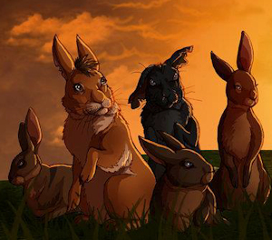

|
is working with Government agencies towards the establishment of Car-rang-gel Sanctuary on North Head at the gateway of Sydney Harbour - a flagship for Australia's environmental resolve and a celebration of our natural and cultural heritage. |
Car-rang-gel Sanctuary on North Head, Sydney

|
|
|
|
|
|
|
|
|
Research | Volunteering |
|
Research concerning North Head
Contents:1. Research after fire
2. An evaluation of two management options
3. Impacts of fire, thinning and herbivory on species diversity in Eastern Suburbs Banksia Scrub
4. Progress with restoration and management of Eastern Suburbs Banksia Scrub on North Head, Sydney
5. The effect of predation by rabbits on regenerating Eastern Suburbs Banksia scrub
6. Comparing ground and UAV (Unmanned Aerial Vehicle) surveys after fire in an urban bushland
7. Eastern Suburbs Banksia Scrub: Is fire the key to restoration? - Journal article by Geoff and Judy Lambert
8. Fire severity: Does it affect coastal heathland restoration?
9. Surveys of echidnas sighted on North Head
1. Research
after fire
Click
here to read about the Seminar.
Presentations were from Sydney Harbour
Federation Trust, Fire and Rescue New South Wales, and Willoughby City
Council
and a tour of the restoration work within Eastern Suburbs
Banksia Scrub (ESBS)
was given by Drs Judy and Geoff Lambert
and stimulated great
discussion amongst the 55 participants.
 This area was not burned but was "thinned" by removing tea tree plants. |
 This is an area before a fire went through. |
 After the fire regeneration was monitored and compared with thinned areas. |
2. An evaluation of two management options
to restore species diversity of Eastern Suburbs Banksia Scrub at North Head, Sydney
Authors: Judy Lambert, Geoff Lambert, Belinda Pellow
Published March 2015 in "Cunninghamia: A journal of plant ecology for eastern Australia"
 Fenced area compared with unfenced |
3.
Impacts
of fire, thinning and herbivory on species diversity in Eastern
Suburbs Banksia Scrub Authors: Judy Lambert, Geoff Lambert, Belinda Pellow Published March 2015 in "Cunninghamia: A journal of plant ecology for eastern Australia" 4. Progress with restoration and management of Eastern Suburbs Banksia Scrub on North Head, Sydney Authors: Judy Lambert, Geoff Lambert Published May 2015 in ECOLOGICAL MANAGEMENT & RESTORATION VOL 16 NO 2 MAY 2015 How has management of Eastern Suburbs Banksia Scrub vegetation on North Head progressed over the last 6 years and what insights can be gained from recent treatments? 5. The effect of predation by rabbits on regenerating Eastern Suburbs Banksia scrub Authors: Judy Lambert, Geoff Lambert An evaluation based on establishing fenced areas to compare with unfenced areas for bushland recovering from fire. |
 Rabbits |
 Drone Survey 2018 |
6.
Surveys to evaluate the impacts of fire - comparing ground surveys with Unmanned Aerial Vehicle surveys Authors: Geoff Lambert, Judy Lambert, Jeremy Randle Paper presented to the Ecological Society in Brisbane in November 2018 This paper examined the questions of ...... Can ESBS be restored by fire? Can we compare Ground-based quadrat surveys of 1% of the site with Aerial Surveys of the same area? Can we extrapolate to the entire site from the survey of 1%? The conclusions were that ... * Plant species were identifiable from drone imagery by inspection & possibly by training the image analysis software; * Plant numbers are harder to measure but coverage should be measureable, with software; * Quadrats seem to have captured a representative mix of species * We can extrapolate from this to the whole site |
 Flight lines of Unmanned Aerial Vehicle |
8. Fire Severity: Does it affect coastal heathland restoration?
Authors: J. Lambert, G. Lambert and K. Hammel
This Presentation was given during the May 19-20, 2021, Nature Conservation Council online Bushfire Conference
Click here to see the Powerpoint Screens that were used during the Presentation
9. Survey of echidnas on North Head

In 2013, we estimated the number of echidnas we have at North Head to be at least 18 adults (quite a high number for an area of just under 300ha). Using photo survey mapping of echidna sightings, we assessed where they were living as they searched for food or a mate.
Help us repeat this survey. Beginning in September, visitors to North Head are encouraged (through our newsletter, a brochure distributed through ‘Bandicoot Heaven, the Trust’s Visitor desk, an article in the Trust’s newsletter and distribution to all North Head land managers, and by word of mouth) to let us know of any echidna sightings and record them on camera.
Click here to access the Echidna Record Sheet.
You can lodge your photos, together with the date and location details, by emailing twswombat@iinet.net.au
|
|
|
|
|
|
|
|
|
Research | Volunteering |
|
|
Email: |
This page was coded for the North Head Sanctuary Foundation
by Judith Bennett.
Copyright
and Disclaimer